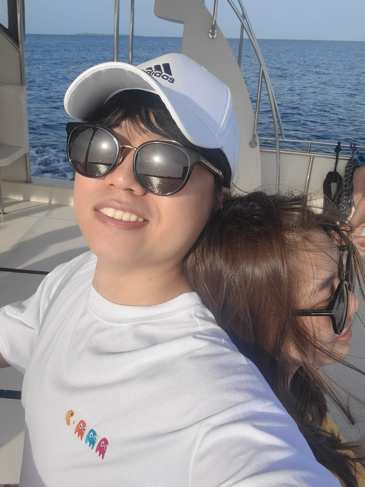

Postdoctoral Researcher, Moffat Lab, SickKids
Toronto, Canada
Seon Yong
Lee
Uncovering how biomolecular condensates sense cell volume and drive cancer.
My research centers on a fundamental question: how do cells sense and respond to changes in their own size? At the Moffat Lab, I investigate the TSC22D–WNK–NRBP (TWN) condensate network — a molecular sensor that detects macromolecular crowding and rewires cell volume regulation accordingly. Using genome-wide CRISPR screening and advanced imaging technologies, I explore the multifaceted functions of this novel condensate network, with the ultimate goal of uncovering new therapeutic vulnerabilities.

—
Citations
—
h-index
—
Papers
via OpenAlex
Key Publications
The TSC22D, WNK, and NRBP gene families exhibit functional buffering and evolved with Metazoa for cell volume regulation
Systematic functional genomics analysis of the TWN gene families revealing their co-evolution with Metazoa and roles in macromolecular crowd sensing.
Migrasomal autophagosomes relieve endoplasmic reticulum stress in glioblastoma cells
Discovery of migrasomes as stress-relief organelles in GBM, linking migrasomal autophagy to ER homeostasis in brain tumor cells.
"The most profound discoveries lie not in the answers we find, but in the questions we have the courage to ask."— Seon Yong Lee